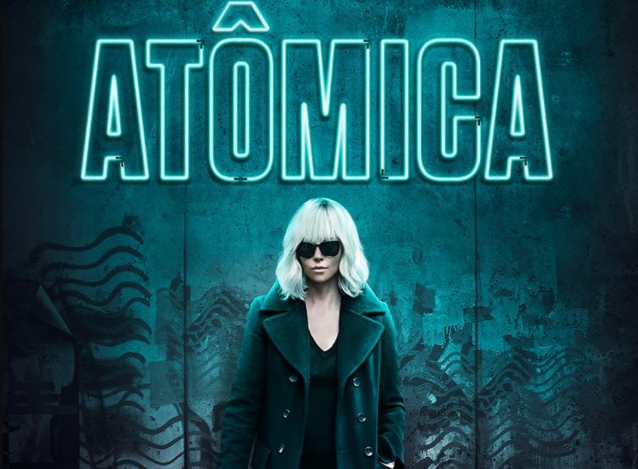

Um vendedor é recrutado para se tornar um espião e recebe a missão de se infiltrar na Rússia. Sua jornada vai se tornando mais arriscada e ele se vê cada vez mais envolvido em uma trama de paranoia e ameaças.
Onde assistir: Amazon Prime VideoGUERRA FRIA
Resumo
A Guerra Fria foi um conflito político-ideológico que foi travado entre Estados Unidos (EUA) e União Soviética (URSS), entre 1947 e 1991. O conflito travado entre esses dois países foi responsável por polarizar o mundo em dois grandes blocos, um alinhado ao capitalismo e outro alinhado ao comunismo.
Ao longo da segunda metade do século XX, a polarização mundial resultou em uma série de conflitos de pequena e média escala em diferentes locais do mundo. Esses conflitos contavam, muitas vezes, com o envolvimento indireto de EUA e URSS, a partir do financiamento, da disponibilização de armas e do treinamento militar.
Contudo, nunca houve um confronto aberto entre americanos e soviéticos, sobretudo pela possibilidade de destruição do planeta em larga escala caso houvesse um conflito entre os dois. Apesar dos discursos afiados e da intensa atuação estratégica para manter sua zona de influência, americanos e soviéticos foram cautelosos ao extremo e evitaram um conflito contra o outro.
.png)
Causas
A Guerra Fria foi iniciada logo após a Segunda Guerra Mundial e existe um debate acirrado entre os historiadores a respeito de como foi iniciado esse conflito político-ideológico. De toda forma, existe um certo consenso de que o marco que iniciou a Guerra Fria seja o discurso realizado pelo presidente americano, Harry Truman, em 1947.
Esse discurso de Truman foi realizado no Congresso americano e, nessa ocasião, o presidente americano solicitava verbas para que os Estados Unidos pudessem se engajar para evitar o avanço do comunismo na Europa. Na visão de Truman, era papel dos EUA liderar a luta contra o avanço do comunismo no continente europeu.
Esse discurso deu início ao que ficou conhecido como Doutrina Truman, que consistiu no conjunto de medidas tomadas pelos EUA para conter o avanço do comunismo. A primeira ação tomada por essa doutrina foi o Plano Marshall, plano de recuperação econômica da Europa com o qual os americanos forneceriam grandes somas de dinheiro para os países interessados.
A atuação dos Estados Unidos na Europa por meio da Doutrina Truman justifica-se única e exclusivamente pelo discurso alarmista que apresentava a URSS como uma potência expansionista e que procuraria conquistar todo o continente europeu sob a égide do comunismo. Os americanos sabiam que os problemas econômicos da Europa no pós-guerra eram um campo fértil para o crescimento da ideologia comunista lá.
Ainda assim, historiadores como Eric Hobsbawm e Isaac Deutscher argumentam que a União Soviética não era uma nação expansionista e não demonstrava interesse em atuar fora da sua zona de influência (o Leste Europeu). Esses historiadores apontam que a União Soviética não tinha interesses em financiar e apoiar movimentos comunistas armados em outras partes do mundo e que a postura soviética no pós-guerra era abertamente defensiva por causa da destruição do país como consequência da Segunda Guerra Mundial.
A ideia por trás da ação americana em impor-se como nação hegemônica na Europa e no mundo é explicada pelos interesses de Truman em manter elevados os índices de crescimento econômico do país. Assim, o discurso maniqueísta praticado pelos americanos começou a ser praticado também pelos soviéticos, e as relações dos dois países em nível internacional passaram a ser baseadas no boicote.
Além disso, existem evidências que apontam que o governo soviético não tinha interesse em expandir-se territorialmente e tinha o objetivo de assegurar apenas a sua área de influência. Isso de fato aconteceu e, na Segunda Guerra, os locais invadidos pelo Exército Vermelho, que era o exército soviético, foram transformados em Estados-satélites do regime comunista de Moscou.
Consequências
Na economia, o fim da Guerra Fria iniciou a expansão do capitalismo a todos os países do globo.
O mundo abandonou as disputas ideológicas das décadas anteriores para se concentrar em apenas em uma ideologia, a capitalista. Nesta fase, o capitalismo assumiu o nome de neoliberalismo, onde o Estado deve intervir o mínimo possível na economia.
Já com a desintegração da União Soviética surgiram quinze novos países. Na Europa, observamos a separação da Tchecoslováquia e o início da Guerra da Iugoslávia.
As instituições lideradas pela União Soviética desapareceram. O Pacto de Varsóvia acabou entre 1990 e 1991, em consequência do fim dos regimes socialista do Leste europeu.
A própria OTAN perdeu o significado que lhe deu origem e agora é uma aliança militar utilizada para o combate ao terrorismo.
Alguns resquícios da Guerra Fria no mundo atual são a separação da Coreia do Norte e do Sul, a existência de ogivas nucleares americanas em bases da Alemanha e a tensão nas relações entre a Rússia e os Estados Unidos.
Fim
A Guerra Fria teve fim com a dissolução da União Soviética que ocorreu em 26 de dezembro de 1991. O fim da URSS foi resultado da grande crise econômica e política que atingiu aquele país a partir da década de 1970. A falta de ações para resolver os problemas do bloco comunista foram responsáveis por levar o país ao fim.
A economia soviética demonstrava, já na década de 1970, claros sinais de esgotamento e o país era mais atrasado em relação às grandes potências. A indústria soviética estava em queda, a produção agrícola era insuficiente e os indicadores sociais começaram a regredir demonstrando um claro empobrecimento do país.
A disparada no valor do petróleo criou uma falsa sensação de prosperidade no começo da década de 1980 e, por isso, o país não passou por reformas importantes em sua economia. Além disso, a sociedade soviética não tinha acesso a tecnologias que garantiam avanço na qualidade de vida no ocidente e a corrupção tornava tudo pior.
Dois acontecimentos na década de 1980 acabaram agravando a situação do país. A invasão do Afeganistão forçou a União Soviética a gastar milhões na luta contra os rebeldes islâmicos e, em 1986, o acidente nuclear em Chernobyl causou morte e destruição, além de forçar os soviéticos a gastarem altas somas para conterem os efeitos do acidente nuclear.
A situação econômica ruim contribuiu para aumentar a insatisfação da sociedade com os governos comunistas. Em todo o bloco, a pouca liberdade de expressão e o autoritarismo manifestado pelos governos comunistas era uma realidade, e a insatisfação com a crise econômica e a questão política fizeram surgir movimentos de oposição por todo o bloco comunista.
Os primeiros sinais manifestaram-se na Alemanha Oriental, Hungria e Polônia. Os alemães derrubaram o Muro de Berlim, no final de 1989, e promoveram a reunificação da Alemanha, os húngaros abriram as fronteiras do país com o Ocidente e os poloneses elegeram o primeiro governo não comunista desde a Segunda Guerra.
A União Soviética começou a promover a abertura da sua economia no governo de Mikhail Gorbachev por meio da Glasnost e Perestroika. Logo, as nações que formavam a URSS começaram a se mobilizar pela sua independência. Em 25 de dezembro de 1991, Gorbachev renunciou e, no dia seguinte, a União Soviética foi dissolvida.
Em sequência, uma série de países conquistaram a sua independência, tais como Ucrânia, Bielorrússia, Armênia etc. Esses países reuniram-se na Comunidade dos Estados Independentes (CEI) e realizaram a transição para o capitalismo.
Recomendação
O Espião Inglês
O Espião Inglês
⇡
Atômica

Atômica
Lorraine Broughton, uma espiã do MI6, é enviada para Berlim durante a Guerra Fria para investigar o assassinato de um oficial e recuperar uma lista perdida de agentes duplos. Ao lado de David Percival, chefe da localidade, a assassina usa todas as suas habilidades nesse confronto de espiões.
Onde assistir: Telecine
⇡
O Agente da UNCLE
O Agente da UNCLE
Em 1963, durante auge da Guerra Fria, os até então inimigos mortais, Napoleon Solo (melhor agente da CIA), e Illya Kuryakin (melhor espião da KGB), são forçados a trabalhar juntos para derrotar uma misteriosa organização criminosa, conhecida apenas como THRUSH, que ameaça usar armas nucleares para dominar o mundo.
Onde assistir: HBO Max
⇡